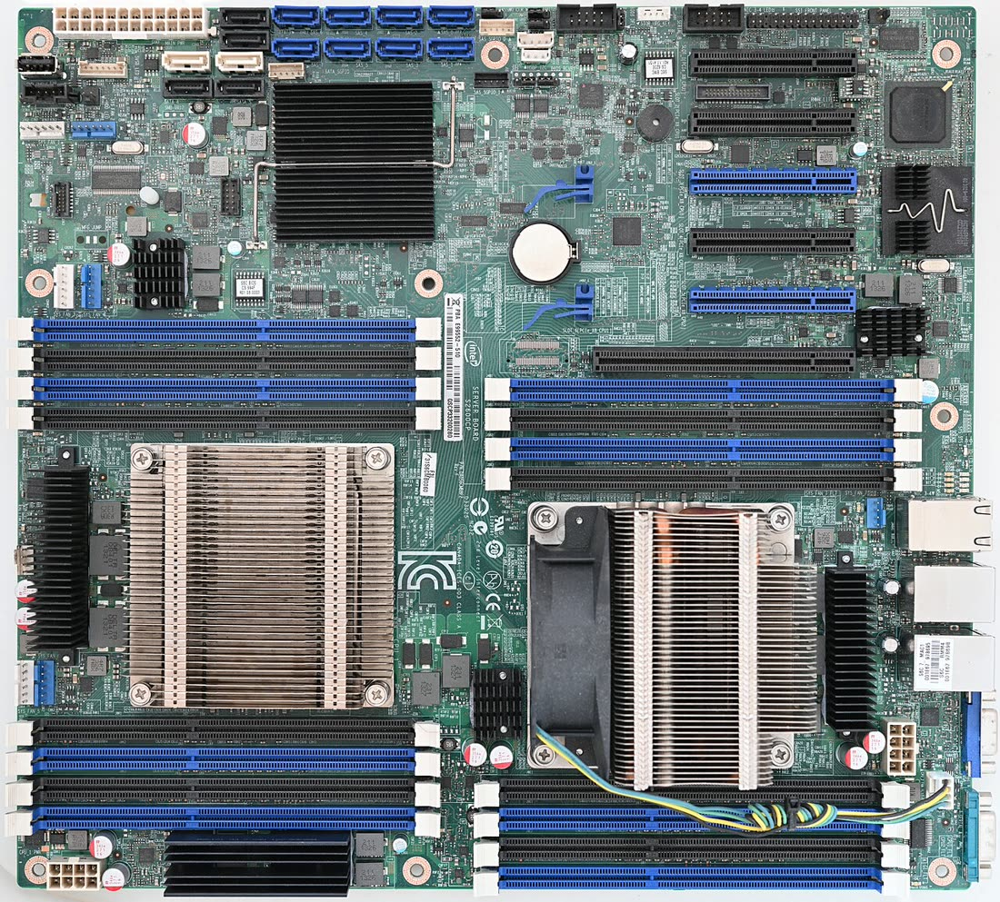
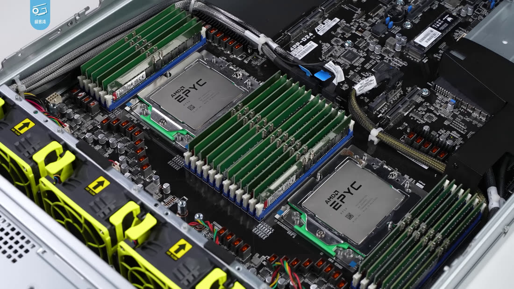

NUMA：大机型的隐形税
你租了一台 192 核的大机器，跑分却只有预期的 60%。CPU 图看着正常，内存也没满。问题往往不在"用了多少"，而在"数据放在哪"。这篇从一块真实的主板讲起，讲到 kernel、数据库和 Kubernetes。
- 大服务器里有好几颗 CPU，每颗 CPU 管着自己的一组内存。一颗 CPU 加它的内存，叫一个 NUMA node。
- 读自己 node 的内存快，读别的 node 的内存大约慢一倍。
- 所以在大机器上，除了看"用了多少内存"，还要看"内存放在哪个 node"。小机器（单 node）完全不用管。
1 · 物理起源
先打个比方。一家公司租了两栋楼，每栋楼都有自己的档案室。员工去本楼档案室拿文件，走几步就到。要拿另一栋楼的文件，就得穿过两栋楼之间的连廊：路更远，连廊也只有那么宽，人一多还要排队。
服务器里的内存，就是按这个方式摆放的：
- 楼 = CPU socket（CPU 插座，一个插座装一颗 CPU；也可以是一颗芯片里的一块 CCD / tile，也就是芯片内部的一组核心）。每个 socket 自带内存控制器（负责读写内存条的电路）。
- 档案室 = DIMM 内存条。每根 DIMM 接在某一个内存控制器上，所以它"属于"某个 socket。
- 连廊 = socket 之间的互联。Intel 叫 UPI（更早叫 QPI），AMD 叫 Infinity Fabric，Arm Neoverse 平台用 CMN mesh（片内网格网络）加片间一致性链路。带宽有限，还有额外延迟。
光说不够直观，直接看一块真实的双路主板：

CPU（node 0） node 0 的内存插槽 node 0 的内存插槽 CPU（node 1） node 1 的内存插槽 node 1 的内存插槽照片里能看到"楼"和"档案室"，但看不到"连廊"。把它画成示意图，就是下面这样。一个 socket 加上它自己的内存，就叫一个 NUMA node：
具体慢多少？看典型延迟：
| 数据在哪 | 延迟 |
|---|---|
| L1 cache（CPU 内部最快的缓存） | ~1 ns |
| L2 cache | ~4 ns |
| L3 cache | ~15 ns |
| 本地 DRAM（内存条） | ~80 ns |
| 远端 DRAM（跨 socket） | ~150–200 ns |
跨 socket 大概比本地慢 2 倍。换句话说，同样一次读内存，数据放错了 node，就要多等一倍时间。每秒几十亿次访存乘下来，就是你能感觉到的性能差。
2 · 为什么叫 NUMA
NUMA 是 Non-Uniform Memory Access 的缩写，中文叫"非一致内存访问"。"非一致"说的就是上一节的现象：读一次内存要多久，取决于内存在哪。本地快，远端慢，不是一个固定值。
有"非一致"，就有"一致"。它的反面叫 UMA（Uniform Memory Access）：
回到档案室的比方：UMA 就像整个公司只有一个档案室，谁去都一样远，所以访问时间是"一致"的。人少的时候没问题；人一多，大家都挤在同一条走廊上，走廊就成了瓶颈。
解决办法是每栋楼建自己的档案室，也就是把内存控制器搬进 CPU。AMD 在 2003 年的 Opteron 上先这么做，Intel 在 2008 年的 Nehalem 架构上跟进（服务器版 Xeon 5500 在 2009 年发布）。从那以后，几乎每台双路服务器都是 NUMA。
其实 NUMA 这个设计更早就有：90 年代 Sequent 的 NUMA-Q、SGI 的 Origin 这些大型机已经在用。只是那时它属于昂贵的专用机器，直到内存控制器进了 CPU，它才变成每个开发者都可能遇到的问题。[10]
3 · 看拓扑
调优之前，先看"平面图"：这台机器有几栋楼，每栋楼里有哪些 CPU、多少内存。最常用的命令是 numactl -H。下面是一台双路 x86 机器（m7i.48xlarge，192 vCPU，768 GiB）的输出：
$ numactl -H
available: 2 nodes (0-1)
node 0 cpus: 0-47 96-143
node 0 size: 386420 MB
node 0 free: 12034 MB
node 1 cpus: 48-95 144-191
node 1 size: 386547 MB
node distances:
node 0 1
0: 10 21
1: 21 10
逐行读：
- available: 2 nodes：两栋楼。
- node 0 cpus: 0-47 96-143：为什么是两段？因为 Intel 开了超线程（SMT，一个物理核同时跑两个线程），一个物理核有两个 vCPU。0-47 是 48 个物理核的第一个线程，96-143 是同一批核的第二个线程。Graviton 没有超线程，所以在 Graviton 上你会看到一整段连续的编号。
- node distances：
10表示本地，21表示跨一跳。比值约 2.1，正好对上一节的延迟表。
node 0、node 1 这些编号从哪来
不是 Linux 自己猜的，是固件告诉它的。开机时 BIOS / UEFI 会在 ACPI 里放两张表：
- SRAT（System Resource Affinity Table）：列出哪些 CPU、哪段物理内存属于同一个 proximity domain（亲和域）。
- SLIT（System Locality Information Table）：列出这些域之间的相对距离，也就是上面那张 10 / 21 的表。
Linux 启动时读这两张表，把每个 proximity domain 映射成一个 node 编号，从 0 开始编，然后在 /sys/devices/system/node/ 下面建出 node0、node1……[11]
Arm 服务器（包括 Graviton）一样走 ACPI。虚拟机里这两张表由 hypervisor 生成（EC2 上是 Nitro），metal 实例则直接来自主板固件。想看原始记录，可以用 dmesg | grep -i -E "srat|numa"。
numactl -H 的输出为准，不要只数 CPU 个数。
看其他细节
$ lscpu | grep NUMA NUMA node(s): 2 NUMA node0 CPU(s): 0-47,96-143 NUMA node1 CPU(s): 48-95,144-191 $ cat /sys/devices/system/node/node0/meminfo | head -3 Node 0 MemTotal: 395694568 kB Node 0 MemFree: 12323400 kB Node 0 MemUsed: 383371168 kB # 网卡、NVMe 也属于某个 node（-1 表示单 node 机器） $ cat /sys/class/net/eth0/device/numa_node 0
还能看到某个进程的内存到底落在哪：
$ numastat -p $(pgrep -f postgres | head -1) Per-node process memory usage (in MBs): Node 0 Node 1 Total Heap 12043 20988 33031 ← 内存被切成两半 Stack 0 1 1 Private 14200 22103 36303
再细一层，看每一段虚拟内存用的是什么策略：
$ cat /proc/12345/numa_maps | head -3
7f8a1c000000 default anon=524288 dirty=524288 N0=262144 N1=262144
7f8a5c000000 bind:0 anon=131072 dirty=131072 N0=131072
N0=… N1=… 是这段内存在每个 node 上的实际页数。default、bind:0 就是下一节要讲的"策略"。
4 · 内存放哪：mempolicy
先讲一个最重要的默认行为：first-touch。程序 malloc 一大块内存时，kernel 其实没有马上分配；要等某个线程第一次写某一页（page，内存分配的最小单位，通常 4 KB），才真正分配那一页，而且放在那个线程当时所在的 node。
这就像停车：车位不是提前分好的，谁先开进来，就停在离他最近的停车场。后面很多坑，都是因为"第一个开进来的人"不是之后真正常用这块内存的人。
如果不想用默认规则，可以给进程或某段内存设一个策略（mempolicy）。kernel 文档里最常用的是这几种 [1]：
- MPOL_DEFAULT：不单独设，沿用更上一层的策略，最后落到系统默认，也就是 local。
- MPOL_LOCAL：放在执行分配的 CPU 所在的 node。这就是 first-touch。
- MPOL_BIND：只能从指定的 node 集合里分配。集合里有多个 node 时，选离分配点最近、并且有足够空闲内存的那个。都满了就直接失败，不会去别处借。
- MPOL_PREFERRED：优先从指定的一个 node 分配；失败了再按距离由近到远去别的 node。
- MPOL_INTERLEAVE：在指定的 node 之间按页轮流分配。适合"大家都会读"的大块共享内存，比如数据库缓存。
新一点的 kernel 还多了两种：MPOL_PREFERRED_MANY（5.15 起，可以优先一组 node）和 MPOL_WEIGHTED_INTERLEAVE（6.9 起，按权重轮流放，常用在 CXL 内存上）。
命令行里对应的就是 numactl 的几个参数 [4]：
# 进程和内存都绑在 node 0 numactl --cpunodebind=0 --membind=0 ./server # 内存在所有 node 之间轮流放 numactl --interleave=all ./mysqld # 优先 node 1，满了再说 numactl --preferred=1 ./batch-job
mbind() 或 migrate_pages()。所以服务已经跑热了再改策略，基本没用，要在启动时就设好。[1]
5 · 读懂 numastat 计数器
直接敲 numastat，会看到每个 node 一列计数器。可以把它想成酒店的订房记录：你想住 A 酒店，结果 A 满了，被安排去了 B。这一次，A 记一笔"没住进来的客人"，B 记一笔"不是冲我来的客人"。
| 计数器 | 意思（man 8 numastat）[5] |
|---|---|
numa_hit | 想放在这个 node，也确实放在了这个 node。 |
numa_miss | 进程想要别的 node，结果放到了这个 node。 |
numa_foreign | 本来想放在这个 node，结果放到了别的 node。一个 node 的每次 miss，都对应另一个 node 的一次 foreign。 |
interleave_hit | interleave 策略下，按计划放到了这个 node。 |
local_node | 进程在这个 node 上运行，内存也分配在这个 node。 |
other_node | 进程在别的 node 上运行，内存却分配在这个 node。 |
最常用的判断：node A 的 numa_miss 高，同时 node B 的 numa_foreign 也高，说明 B 的内存已经不够了，本该放在 B 的内存被挤到了 A。下一步去看 B 上是哪个进程占了大头（numastat -p）。
注意这些都是开机以来的累计值。要看"现在"的情况，隔几秒采两次，看差值。
6 · 自动搬家：Auto-NUMA balancing
既然 first-touch 常常放错，kernel 能不能自己改？可以，这就是 NUMA balancing。它像一个搬家公司：观察你最常去哪栋楼拿文件，然后把文件搬过去。但"观察"和"搬家"本身都要花力气。
$ cat /proc/sys/kernel/numa_balancing
1
开着的时候，kernel 会定期把一部分页面临时"取消映射"。下次有线程访问这一页，就会触发一次轻量的 page fault（缺页异常，CPU 发现页不在映射里时通知 kernel），kernel 借机记下"是谁、从哪个 node 来访问"，必要时把这一页搬到访问者所在的 node。
kernel 文档说得很直白：这些取消映射和 fault 有额外开销，希望靠更好的局部性赚回来，但不保证一定赚；如果业务已经手动绑好了 node，就应该关掉它。[2]
判断它有没有在帮忙，看 /proc/vmstat：
numa_pte_updates ← 采样了多少页 numa_hint_faults ← 触发了多少次 hint fault numa_hint_faults_local ← 其中访问者本来就在本地的次数 numa_pages_migrated ← 实际搬了多少页 pgmigrate_success/fail ← 搬家成功 / 失败
健康的信号：numa_hint_faults_local / numa_hint_faults 这个比例随时间上升，说明 kernel 正在把线程和内存"对齐"。
不健康的信号：这个比例一直很低，而 numa_pages_migrated 一直在涨，就是在来回白搬。这时用 sysctl kernel.numa_balancing=0 关掉，改成手动绑定。
7 · 真实故障：MySQL "swap insanity"
讲一个经典案例。2010 年 Jeremy Cole（当时在 Twitter）写过一篇复盘 [3]：
- 机器：双路，64 GB 内存，也就是每个 node 大约 32 GB。
- MySQL 的 InnoDB buffer pool 设成 48 GB，实际占了 51 GB 左右。
- 怪事：机器明明还有空闲内存，MySQL 却在不停地 swap（把内存页换到磁盘上，再换回来），性能很差。
他用 /proc/<pid>/numa_maps 一看，buffer pool 在 node 0 上有 30.45 GB，在 node 1 上只有 20.75 GB。node 0 几乎被 MySQL 一个进程占满了。
为什么会这样？正是前面讲的 first-touch：buffer pool 大部分是由跑在 node 0 上的线程先写的，所以都落在了 node 0。再加上当时 kernel 在本地 node 内存不足时，倾向于先回收本地内存（包括换页），而不是马上去远端 node 分配。
修复只有一行，在 mysqld_safe 里加上：
cmd="/usr/bin/numactl --interleave all $cmd"
之后 buffer pool 在两个 node 上各 26.00 GB，swap 消失了。
后来的 MySQL 5.7 直接加了 innodb_numa_interleave 参数来做这件事 [9]；另一个相关的开关 vm.zone_reclaim_mode，数据库场景普遍建议设为 0（Linux 3.16 起默认就是 0）。
8 · 常见 性能陷阱
下面这些坑，根子几乎都是同一个：先写内存的线程，和后面常用这块内存的线程，不在同一个 node。
JVM
默认的 JVM 不感知 NUMA：heap（Java 对象所在的内存）的每一页落在哪个 node，取决于谁先写它，分布经常很不均。
打开 -XX:+UseNUMA，JVM 会让每个线程优先在本地 node 上分配新对象。Parallel GC 早就支持，G1 从 JDK 14 起支持 [8]。另一个办法是每个 node 起一个 JVM：numactl --cpunodebind=N --membind=N java …。
PostgreSQL / MySQL
数据库的缓存（shared_buffers、InnoDB buffer pool）是一大块所有连接共享的内存，每一页落在第一个写它的进程所在的 node。而处理查询的进程会被调度到任意 node 上，所以跨 node 读非常常见。
两种修法：启动时加 numactl --interleave=all，让缓存在两个 node 上平均分布；或者把整个数据库绑到一个 node，另一个 node 留给系统和其他服务。
Python multiprocessing
Pool(64) 会 fork 出一批 worker，scheduler 把它们撒到各个 node 上；但 fork 之前在父进程里建好的大数组，只在父进程所在的 node 上。结果一半的 worker 一直在读远端内存。
修法：把父进程和 worker 都绑到同一个 node；或者让每个 worker 在 fork 之后自己加载数据。
Docker 容器
没设 --cpuset-cpus 和 --cpuset-mems 的容器，每次调度都是碰运气。只设 CPU、不设内存，只算修了一半：CPU 在 node 0，内存可能全在 node 1。
网卡队列（ENA）
网卡也属于某个 node。ENA 有多个收发队列，每个队列有一个中断（MSI-X IRQ，网卡用来"叫醒"CPU 的信号），中断绑在哪个 CPU 上，收包就在哪个 CPU 上处理。
如果你的应用跑在 node 1，而收包的中断在 node 0 上，每个包都要跨一次 socket 互联。AWS 的 ENA 最佳实践建议把应用和它用的队列放在同一个 node 上 [7]。
# 看 ENA 的每个中断落在哪个 CPU，再对照 /sys/devices/system/node/nodeX/cpulist grep ena /proc/interrupts | awk '{print $1, $NF}' # 网卡本身在哪个 node cat /sys/class/net/eth0/device/numa_node
在多 node 的大机型上，还要看 ENA 驱动的 rx_queue#_lpc_wrong_numa 计数器（ethtool -S eth0），不为 0 就说明收包缓冲放错了 node [7]。
9 · EC2 拓扑速查：M8 和 M9 代
在 EC2 上，你不会直接看到主板，但它还在那里。一台实例有几个 NUMA node，取决于它背后用了几颗 CPU，以及那颗 CPU 内部怎么切。

很多人以为规律很简单："一颗 CPU 装不下，才会变成两个 node"。对 m8g 和 m8a 来说确实如此。但新一代的 m8i 和 m9g 不一样，一颗 CPU 里面也可能有好几个 node。先看全景：
m8g（Graviton4）：最简单
每颗 Graviton4 有 96 个核，没有超线程，一个 vCPU 就是一个物理核，每颗 CPU 带 12 个 DDR5 通道。
- medium 到 24xlarge（最多 96 vCPU）：只用一颗 CPU，1 个 node。
- 48xlarge / metal-48xl（192 vCPU，768 GiB）：两颗 CPU，2 个 node，每个 node 约 372 GiB，node distance 是 10 / 20。
AWS 的 Graviton 文档也写得很清楚：NUMA node 数为 1，只有 48xlarge 是 2。[12]
m8a（AMD EPYC Turin）：和 m8g 一样
每颗 EPYC 9R45 有 96 个核，没有超线程。AMD 可以用 NPS 把一颗 CPU 切成多个 node，但 AWS 在 m8a 上用的是 NPS1，也就是一颗 CPU 一个 node。
- medium 到 24xlarge：1 个 node。
- 48xlarge / metal-48xl：两颗 CPU，2 个 node。m8a 没有 32xlarge。
m8i（Intel Xeon 6，Granite Rapids）：一颗 CPU 切成三块
这是最容易踩坑的一代。每颗 CPU 有 96 个物理核（开了超线程，就是 192 个 vCPU），但 AWS 打开了 Intel 的 SNC（Sub-NUMA Clustering，子 NUMA 分簇），把一颗 CPU 切成 3 个 node，每个 node 32 个核。[13]
打个比方：还是同一栋楼，但楼里分了三个区，每个区有自己的档案室。去别的区拿文件，比去别的楼近，但还是比本区远。
- large 到 16xlarge（最多 64 vCPU，也就是 32 个核）：正好装进一个区，1 个 node。m8i-flex 最大就是 16xlarge，所以 flex 永远是单 node。
- 24xlarge（96 vCPU，48 核）和 32xlarge（128 vCPU，64 核）：还在一颗 CPU 上，但已经跨了区，2 个 node。
- 48xlarge / metal-48xl（192 vCPU）：一整颗 CPU，3 个 node。
- 96xlarge / metal-96xl（384 vCPU，1536 GiB）：两颗 CPU，6 个 node。
有个旁证：通过 CPU options 自定义核数时，m8i.48xlarge 的核数只能按 3 的倍数设置，96xlarge 只能按 6 的倍数设置，正好对应 3 个和 6 个 node。
m9g（Graviton5）：一颗芯片，两半
Graviton5 在一个封装里放了 192 个核，没有超线程，L3 缓存是 2 × 96 MB。从实测拓扑看，这颗芯片像是两个 96 核的半边拼在一起，每个半边是一个 node。[12][14]
- medium 到 12xlarge（最多 48 vCPU）：1 个 node。
- 16xlarge（64 vCPU）：2 个 node，每边 32 个核、约 124 GiB。AWS 的 Graviton 文档也写明了"16xlarge 和 48xlarge 是 2 个 node"。
- 24xlarge（96 vCPU）：又回到 1 个 node，正好占满一个半边。
- 48xlarge / metal-48xl（192 vCPU，768 GiB）：虽然只有一颗芯片，但是 2 个 node，distance 10 / 20。
换句话说，在 m9g 上，"更大的实例 node 更多"这条直觉不成立。16xlarge 比 24xlarge 小，却是两个 node。如果你的服务对延迟敏感，又刚好需要 64 个核左右，m9g.24xlarge 反而比 16xlarge 更省心。
对比上一代
| 家族 | 单 node 的规格 | 多 node 的规格 |
|---|---|---|
| m7g（Graviton3，64 核） | 全部，最大 16xlarge / metal | 无 |
| m7i（Sapphire Rapids，每颗 48 核） | 24xlarge 及以下 | 48xlarge / metal-48xl：2 个 node |
| m7a（EPYC Genoa） | 24xlarge 及以下 | 32xlarge（2 × 64 核）、48xlarge：2 个 node |
numactl -H 再上线。这些数据来自公开的实测样本（每种规格一台），AWS 并没有承诺拓扑永远不变，所以自己的机器以实测为准。
10 · Kubernetes 的 NUMA 三件套
在 Kubernetes 里，这件事由 kubelet 管。可以想成安排宴会座位：一个 Pod 要用的 CPU、内存、网卡或 GPU，最好坐在同一个厅里，不要分在两栋楼。kubelet 里有三个一起工作的组件 [6]：
- CPU Manager（
static策略）：给 Guaranteed QoS（requests 等于 limits）并且 CPU 是整数的 Pod 独占一组核。 - Memory Manager（
Static策略）：给这类 Pod 在指定 NUMA node 上预留内存。 - Topology Manager：负责协调，把前两者和设备插件的建议合在一起，决定"坐哪个厅"。它有四种策略：
none：默认值，不管对齐。best-effort：尽量对齐，对不齐也让 Pod 启动。restricted：尽量对齐，对不齐就拒绝这个 Pod。single-numa-node：CPU、内存、设备必须全在同一个 node，否则拒绝。
关键前提：独占 CPU 和预留内存只对 Guaranteed QoS + 整数 CPU 的 Pod 生效。普通的 Burstable / BestEffort Pod 拿不到这些，照样会被撒到各个 node 上。
11 · 什么时候不用管
- 单 node 的实例：比如
m8g/m8a的 24xlarge 及以下、m8i的 16xlarge 及以下、m9g的 12xlarge 及以下（还有 m9g.24xlarge）。numactl -H只显示一个 node，这篇文章就和你无关了。 - 无状态、可以横向扩的服务：多开几个小实例或小 Pod，比用一台巨大的实例更简单。
- 瓶颈根本不在内存：真正卡住你的是磁盘、网络或下游 API。
m8g.24xlarge 挂在 ALB 后面，通常比一台 m8g.48xlarge 更好用，运维也更省心。NUMA 不是玄学，只是你租的这台机器的物理形状。先用 numactl -H 看一次拓扑，然后在"绑定、轮流放、不管"三种做法里选一种，之后就不用再想它了。
Sources
- [1] kernel.org · NUMA Memory Policy
- [2] kernel.org · kernel.numa_balancing sysctl
- [3] Jeremy Cole · MySQL Swap Insanity and the NUMA Architecture
- [4] man 8 numactl
- [5] man 8 numastat
- [6] Kubernetes · Control Topology Management Policies on a node
- [7] ENA Linux Best Practices
- [8] JEP 345 · NUMA-Aware Memory Allocation for G1
- [9] MySQL · innodb_numa_interleave
- [10] Wikipedia · Non-uniform memory access
- [11] kernel.org · What is NUMA?
- [12] AWS Graviton Getting Started · NUMA / LLC / DDR 表
- [13] Intel Optimization Zone · Kafka（SNC，每 socket 3 个 node）
- [14] SpareCores sc-inspector-data · EC2 实测 lscpu / lstopo